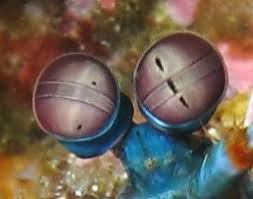
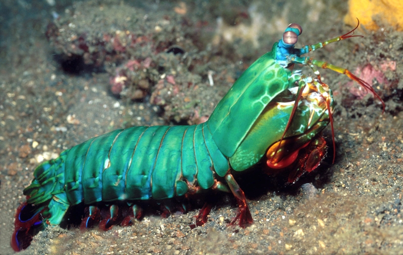

Fatos sobre o Stomatopoda

Informações Gerais
Nome científico: Odontodactylus scyllarus
Camarão mantis - um animal marinho que não é nem mantis nem camarão, mas um parente próximo de caranguejos e lagostas.
Descrição
Os estomatópodes são predadores ativos que caçam presas com o auxílio de um sentido de visão muito apurado e capaz de interpretar polarização no espectro ultravioleta e infravermelho. Apresentam uma grande variação de tamanho, que pode ir de poucos milímetros até aproximadamente 40 cm nas espécies maiores.
Eles vivem em fundo consolidado, lodoso ou ainda arenoso, onde cavam seus buracos ou aproveitam-se dos orifícios deixados por outros animais para neles se instalar
Olhos de um camarão mantis
A maioria das pessoas tem três tipos de células de detecção de luz, ou fotorreceptores, que são sensíveis à luz vermelha, verde e azul. Mas o camarão mantis tem de 12 a 16 fotorreceptores diferentes em sua banda média. A maioria das pessoas presume que elas devem ser realmente boas em ver uma ampla gama de cores - uma “ bomba termonuclear de luz e beleza ”, como disse o Oatmeal.
Como nós, os camarões mantis vêem as cores com a ajuda de proteínas sensíveis à luz chamadas opsinas. Eles formam a base dos pigmentos visuais que reagem a diferentes comprimentos de onda da luz, permitindo-nos ver cores diferentes. Se um camarão mantis tem seis receptores de UV, ele deve ter pelo menos seis opsinas que são sensíveis a diferentes sabores de UV.
Soco potente
As maiores esmagadoras, tais como exemplares de Odontodactylus scyllarus, são capazes de desferir um dos mais rápidos e violentos golpes do reino animal, um soco que pode apresentar a velocidade de 80km/h. Essa força esmagadora é a responsável pelo seu título de "lagosta-boxeadora" e é capaz de facilmente quebrar a carapaça de um caranguejo, as conchas duras e calcificadas de gastrópodes ou até mesmo quebrar o vidro reforçado de um aquário.
Cientistas descobriram que este crustáceo tem um revestimento de nanopartículas resistente ao impacto que lhe permite ter o soco mais potente do reino animal.